| Графическое изображение |
Позиционное
обозначение |
Элемент |
Резисторы |
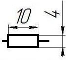
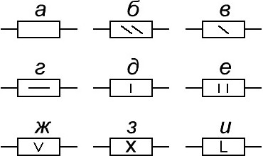 |
R |
Резистор постоянный.
Элемент, предназначенный для уменьшения тока, протекающего по электрической цепи.
а) общее обозначение;
б) мощностью рассеяния 0,125 Вт;
в) мощностью рассеяния 0,25 Вт;
г) мощностью рассеяния 0,5 Вт;
д) мощностью рассеяния 1 Вт;
е) мощностью рассеяния 2 Вт;
ж) мощностью рассеяния 5 Вт;
з) мощностью рассеяния 10 Вт;
и) мощностью рассеяния 50 Вт. |
 |
R |
Резистор переменный
Резистор, сопротивление которого на его центральном выводе регулируется с помощью "ручки-регулятора". |
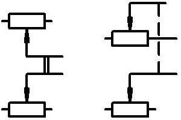 |
|
Резистор переменный сдвоенный |
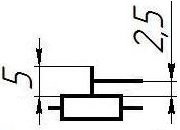 |
R |
Резистор подстроечный
Резистор, сопротивление которого на его центральном выводе регулируется с помощью "шлица-регулятора" - отверстия под отвёртку. |
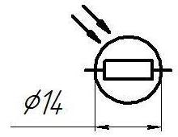 |
R |
Фоторезистор
Резистор, сопротивление которого изменяется в зависимости от освещённости. При увеличении освещённости, сопротивление терморезистора уменьшается, а при уменьшении освещённости наоборот – увеличивается. |
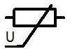 |
RU |
Варистор
Полупроводниковый резистор, резко уменьшающий своё сопротивление при достижении приложенного к нему напряжения определённого порога. |
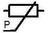 |
|
Тензорезисторы |
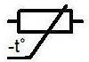 |
RK |
Термистор
Терморезистор, у которого с ростом температуры сопротивление уменьшается. |
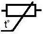 |
RK |
Позистор
Терморезистор, у которого с возрастанием температуры, сопротивление увеличивается. |
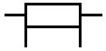 |
R |
Шунт |
 |
R |
Обозначение резистора в зарубежных схемах |
Конденсаторы |
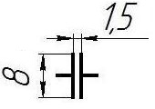 |
C |
Конденсатор (общее обозначение)
Элемент радиосхемы, обладающий электрической ёмкостью, способный накапливать электрический заряд на своих обкладках. |
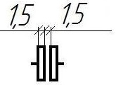 |
C |
Конденсатор электролитический неполяризованный |
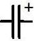 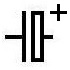 |
C |
Конденсатор электролитический поляризованный |
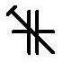 |
C |
Подстроечный конденсатор
Конденсатор, у которого ёмкость регулируется с помощью "шлица-регулятора" под отвёртку. |
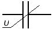 |
C |
Вариконд |
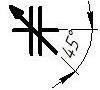 |
C |
Переменный конденсатор
Конденсатор, ёмкость которого регулируется с помощью выведенной наружу радиоприёмного устройства рукоятки (штурвала). |
Устройства коммутации |
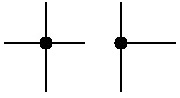 |
Не имеет
обозначения |
Узел
Соединение проводников - проводники на схеме соединяются друг с другом. |
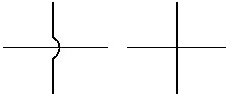 |
Не имеет
обозначения |
Пресечение проводников
Проводники на схеме пересекаются, но не соединяются друг с другом – это разные проводники. |
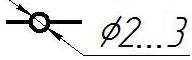 |
XT |
Контакт разборного соединения
Вывод радиосхемы, предназначенный для «жёсткого» (как правило - винтового) подсоединения к нему проводников. |
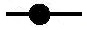 |
XT |
Контакт неразборного соединения |
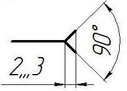 |
XS |
Гнездо разъемного контактного соединения
Соединительный легкоразъёмный контакт типа «разъём». Применяется для кратковременного, легко разъединяемого подключения внешних приборов, перемычек и других элементов цепи, например в качестве контрольного гнезда |
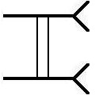 |
XS |
Розетка
Панель, состоящая из нескольких (не менее 2-х) контактов "гнездо". |
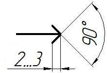 |
XP |
Штекер
Контактный легкоразъёмный штыревой контакт, предназначенный для кратковременного подключения к участку электрорадиоцепи |
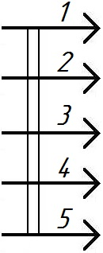 |
XP |
Вилка
Многоштеккерный разъем, с числом контактов не менее двух предназначенный для многоконтактного соединения радиоаппаратуры. |
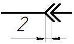 |
|
Соединение разъемное |
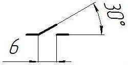 |
S |
Контакт коммутационного устройства замыкающий, общее обозначение |
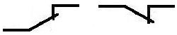 |
SA |
Контакт коммутационного устройства размыкающий, общее обозначение |
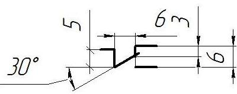 |
SA |
Контакт коммутационного устройства переключающий, переключатель, общее обозначение
Коммутационный прибор, предназначенный для переключения электрических цепей. Один контакт имеет два возможных положения |
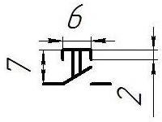 |
SB |
Выключатель кнопочный с замыкающим контактом
Двухконтактный прибор, предназначенный для кратковременного замыкания электрической цепи путём нажатия на него. |
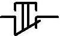 |
SB |
Выключатель кнопочный с размыкающим контактом
Двухконтактный прибор, предназначенный для кратковременного размыкания электрической цепи путём нажатия на него. |
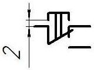 |
|
Переключатель кнопочный с одной группой контактов
|
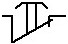 |
SB |
Кнопка размыкающая с возвратом |
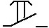 |
SB |
Кнопка замыкающая с возвратом |
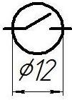 |
SA |
Геркон |
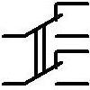 |
SA |
Тумблер
Два "спаренных" переключателя - переключаемых одновременно одной общей рукояткой. Отдельные группы контактов могут изображаться в разных частях схемы, тогда они могут обозначаться как группа S1.1 и группа S1.2. Кроме того, при большом расстоянии на схеме они могут соединяться одной пунктирной линией |
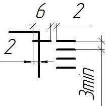 |
S |
Галетный переключатель
Переключатель, в котором один контакт "ползункового" типа, может переключаться в несколько разных положений. Бывают спаренные галетные переключатели, в которых имеется несколько групп контактов |
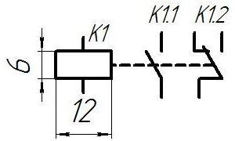
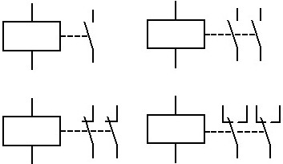 |
K |
Электромагнитное реле
Электрический прибор, предназначенный для переключения электрических цепей, путём подачи напряжения на электрическую обмотку (соленоид) реле. В реле может быть несколько групп контактов, тогда эти группы нумеруются (например Р1.1, Р1.2) |
Измерители электрических величин |
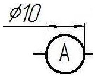 |
PA |
Амперметр
Электрический прибор, предназначенный для измерения силы электрического тока.
|
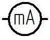 |
PA |
Миллиамперметр |
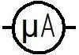 |
PA |
Микроамперметр |
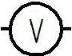 |
PV |
Вольтметр
Электрический прибор, предназначенный для измерения напряжения электрического тока. |
 |
PV |
Милливольтметр |
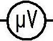 |
PV |
Микровольтметр |
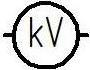 |
PV |
Киловольтметр |
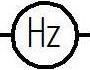 |
|
Частотомер |
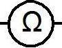 |
|
Омметр |
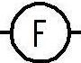 |
|
Фарадометр |
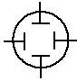 |
|
Осциллограф |
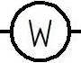 |
|
Ваттметр
|
Индуктивности и трансформаторы |
|
L |
Катушка индуктивности, дроссель без сердечника (магнитопровода)
Обмотка (катушка) из медного провода. |
|
L |
Подстроечная катушка индуктивности
Катушка с регулируемой индуктивностью, у которой имеется подвижный сердечник из магнитного (ферромагнитного) материала. |
|
L |
Дроссель, катушка индуктивности с сердечником (магнитопроводом)
Катушка индуктивности, содержащая большое количество витков, которая исполняется с использованием магнитопровода (сердечника). |
|
T |
Трансформатор однофазный с ферромагнитным магнитопроводом, общее обозначение
Индуктивный элемент, состоящий из двух и более обмоток. |
|
T |
Трансформатор с выводом из обмотки |
|
T |
Трансформатор тока |
|
T |
Трансформатор с двумя вторичными обмотками (может быть и больше) |
|
T |
Автотрансформатор |
|
T |
Трансформатор с тремя обмотками и электростатическим экраном |
|
T |
Трехфазный трансформатор |
Акустика |
|
BM |
Микрофон, общее обозначение |
|
BM |
Микрофон электретный |
|
BF |
Громкоговоритель (динамик) |
|
BF |
Головной телефон |
Прочие |
|
|
Антенна |
|
G |
Фотоэлемент (солнечная панель) |
|
G |
Элемент питания
Одиночный источник электрического тока |
|
GB |
Батарея элементов питания |
|
FU |
Предохранитель |
|
DA, DD |
Микросхема |
|
DA |
Операционный усилитель |
|
Не имеет
обозначения |
Общий провод |
|
Не имеет
обозначения |
Заземление
Вывод схемы, подлежащий подключению к Земле. |
|
EL, HL |
Лампа накаливания
Электрический прибор, применяемый для освещения
EL - осветительная
HL - сигнальная, предназначенная для контроля (сигнализирования) состояния различных цепей аппаратуры. |
|
HL |
Лампа тлеющего разряда (неоновая лампа)
Газоразрядная лампа, наполненная инертным газом. |
|
EL |
Газоразрядная лампа осветительная (лампа дневного света - ЛДС, люминесцентная лампа)
Газоразрядная лампа, в том числе колба миниатюрной энергосберегающей лампы, использующая люминесцентное покрытие – химический состав с послесвечением. |
|
|
Семисегментный индикатор |
|
Не имеет
обозначения |
Кабель коаксиальный |
|
ZQ |
Пьезоэлектрический резонатор
Высокочастотный прибор, обладающий резонансными свойствами подобно колебательному контуру, но на определённой фиксированной частоте |
|
|
Датчик Холла |
Справочная книга радиолюбителя-конструктора. В 2-х кн.- М.: Радио и связь, 1993.
Борисов В.Г. Юный радиолюбитель. - М.: Радио и связь, 1992. - 416с.
Иваницкий В. Советы начинающему радиолюбителю. - М.: ДОСААФ, 1982. - 192 с.
Иванов Б.С. Первые шаги в радиоэлектронику. - М.: Сов. Россия, 1989.- 128 с.
Журнал "Радиолюбитель" 1996 №1-2.